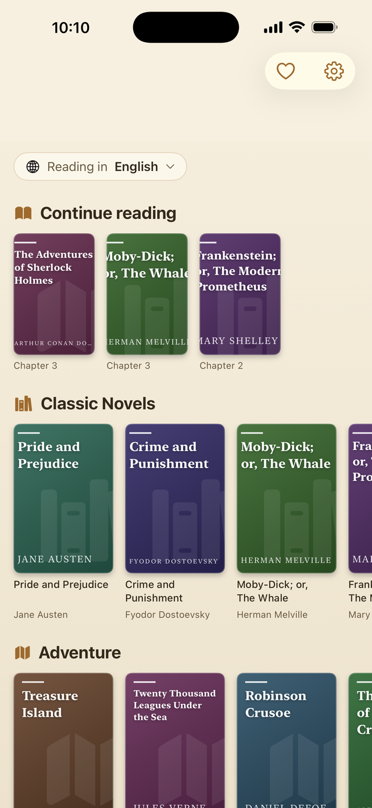
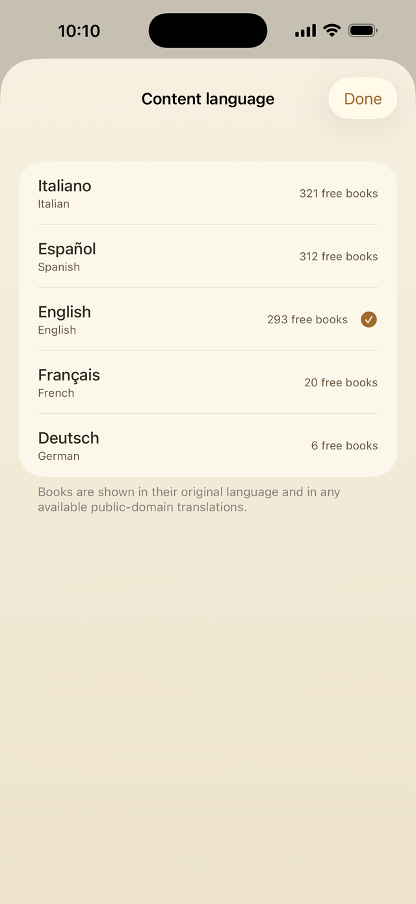
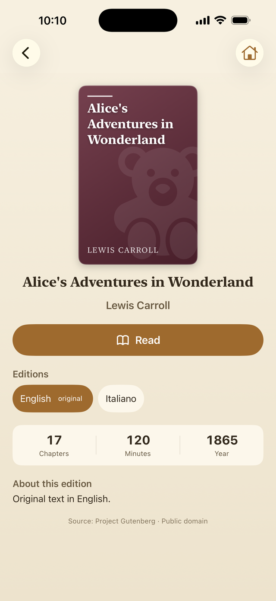
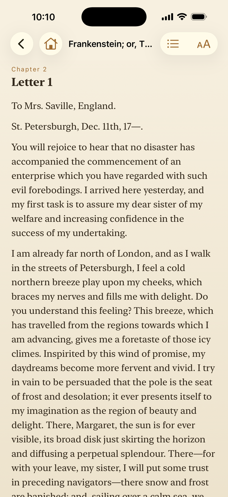
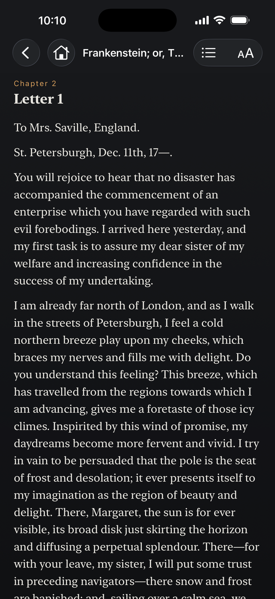
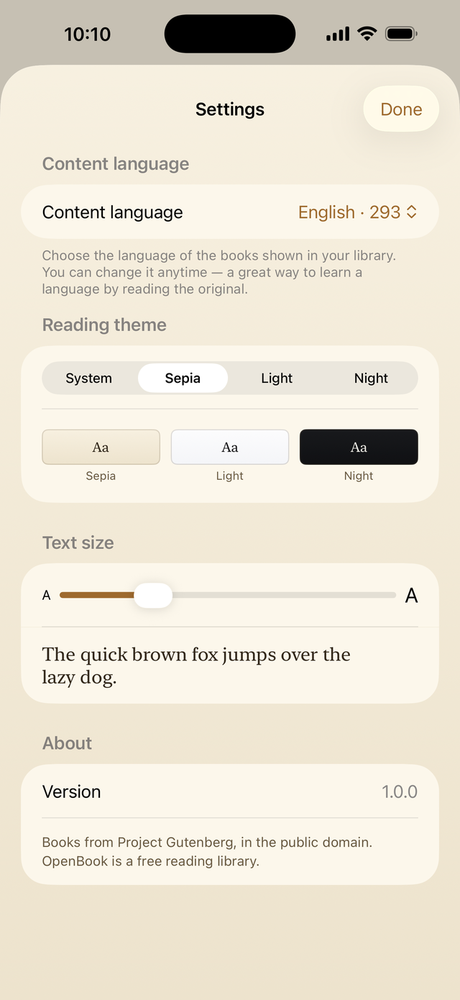

The great classics, in your languageI grandi classici, nella tua linguaLos grandes clásicos, en tu idiomaGrands classiques, libres et hors ligneWeltliteratur, frei und offline lesen
Hundreds of complete public-domain books, free. Pick your language, download a book and read it offline — calm, beautiful and private.Centinaia di libri di pubblico dominio, gratis. Scegli la lingua, scarica un libro e leggilo offline — con calma, in privato.Cientos de obras de dominio público, completas y gratis. Elige tu idioma, descarga un libro y léelo sin conexión, con calma y en privado.Des centaines de chefs-d'œuvre du domaine public, dans une application calme et élégante. Gratuite, hors ligne, sans compte ni traçage — juste vous et de grands livres.Hunderte vollständige Klassiker aus dem gemeinfreien Erbe der Welt – gratis, ohne Konto und ohne Werbung. Lies im Original oder in Übersetzung, online wie offline.
Hundreds of free books · 5 languages · 17 categories · No account, no adsCentinaia di libri gratis · 5 lingue · 17 categorie · Nessun accountCientos de libros gratis · 5 idiomas · 17 categorías · Sin cuentaDes centaines de livres gratuits · 5 langues · 17 catégories · Sans compteHunderte kostenlose Bücher · 5 Sprachen · 17 Kategorien · Kein Konto
A simple, elegant reading app built for the pleasure of a good book — and for your privacy.Un'app di lettura semplice ed elegante, pensata per il piacere di un buon libro e per la tua privacy.Una app de lectura sencilla y elegante, pensada para el placer de un buen libro y el respeto por tu privacidad.Une petite bibliothèque personnelle, pensée dans le moindre détail pour le plaisir de lire.Eine ruhige, elegante Lese-App für die großen Werke der Weltliteratur – kostenlos und respektvoll mit deinen Daten.
Whole public-domain works, always free.Opere complete di pubblico dominio, sempre gratis.Grandes obras completas de dominio público, siempre gratis.Des œuvres complètes du domaine public, en cinq langues, entièrement gratuites.Hunderte vollständige Werke der Weltliteratur, verteilt auf fünf Sprachen – alle gemeinfrei und gratis.
Choose from five languages and the library adapts to you.Scegli tra cinque lingue e la biblioteca si adatta a te.Elige entre cinco idiomas y la biblioteca se adapta a ti.Choisissez la langue des contenus ; la bibliothèque n'affiche que les livres correspondants.Wähle deine Inhaltssprache; die Bibliothek zeigt dir nur Bücher, die es darin auch wirklich gibt.
Every work in its original language and its public-domain translations.Ogni opera nella lingua originale e nelle traduzioni di pubblico dominio.Cada obra en su lengua original y en sus traducciones de dominio público.Chaque livre en version d'origine et, si elles existent, en traductions du domaine public.Jedes Werk in seiner Originalsprache und, wo vorhanden, in gemeinfreien Übersetzungen.
Sepia, light and night themes to read your way.Temi seppia, chiaro e notte per leggere a modo tuo.Temas sepia, claro y noche para leer a tu manera.Trois thèmes papier — sépia, clair, nuit — et une taille de texte réglable.Drei Papier-Themes, verstellbare Schrift, Kapitelnavigation und markierbarer Text.
Download a book once and read it anywhere, no connection needed.Scarica un libro una volta e leggilo ovunque, senza connessione.Descarga un libro una vez y léelo donde quieras, sin internet.Les livres se téléchargent une fois, puis restent sur votre appareil pour toujours.Beim ersten Öffnen lädt das Buch – danach bleibt es auf dem Gerät, auch ohne Netz.
The app is about 3 MB; books arrive when you open them.L'app pesa circa 3 MB; i libri arrivano quando li apri.La app pesa apenas unos 3 MB; los libros llegan al abrirlos.Environ 3 Mo à installer : elle ne prend presque pas de place.Die App selbst ist nur rund 3 MB groß; Bücher kommen erst bei Bedarf dazu.
No account, no tracking — your data stays in your iCloud.Nessun account, nessun tracciamento — i dati restano nel tuo iCloud.Sin cuenta ni seguimiento: tus datos se quedan en tu iCloud.Aucun compte. Vos favoris et votre progression restent dans votre iCloud, à vous seul.Favoriten und Fortschritt bleiben in deiner iCloud. Kein Konto, kein Tracking, keine Werbung.
VoiceOver, Larger Text, dark mode and strong contrast.VoiceOver, testo più grande, modalità scura e contrasto elevato.VoiceOver, texto más grande, modo oscuro y buen contraste.VoiceOver, texte plus grand, mode sombre, contraste et animations réduites.VoiceOver, Dynamic Type, Dunkelmodus, Kontrast und reduzierte Bewegung inklusive.
From the cover to the first page in seconds.Dalla copertina alla prima pagina in pochi secondi.De la portada a la primera página en cuatro pasos.De l'ouverture de l'appli à votre première page, tout est simple et rapide.In vier Schritten von der Sprache zum Lesevergnügen.
Choose the content language and see only the books available in it.Seleziona la lingua dei contenuti e vedi solo i libri disponibili.Selecciona el idioma de los contenidos y verás solo los libros disponibles en él.Sélectionnez la langue des contenus qui vous intéresse.Entscheide, in welcher Sprache du lesen möchtest.
Browse by category and open whatever you fancy.Sfoglia per categoria e apri quello che vuoi.Explora por categorías y abre la obra que te apetezca.Parcourez les catégories et ouvrez l'œuvre qui vous appelle.Stöbere nach Kategorie und öffne, was dich reizt.
The book arrives in seconds and stays on your device.Il libro arriva in pochi secondi e resta sul dispositivo.El libro llega en segundos y se guarda en tu dispositivo.Le texte arrive à la première ouverture, puis reste hors ligne.Das Buch lädt einmalig herunter und öffnet sich sofort.
Switch themes, adjust the text, read offline and pick up with “Continue reading”.Cambia tema, regola il testo, leggi offline e riprendi con “Continua a leggere”.Cambia el tema, ajusta el texto, lee sin conexión y retoma con “Seguir leyendo”.Thèmes, taille du texte, hors ligne et reprise de lecture quand vous voulez.Theme wählen, offline schmökern, jederzeit weiterlesen.
How you read, choose and enjoy.Come si legge, si sceglie e ci si gode un libro.Así se lee, se elige y se disfruta.Une expérience de lecture nette et sereine, du choix du livre à la dernière page.Von der Bibliothek bis zum Nachtmodus – so liest sich OpenBook.





